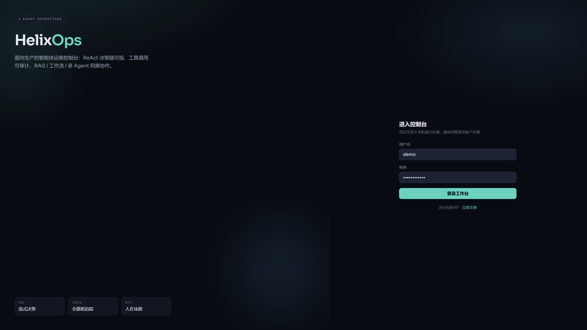
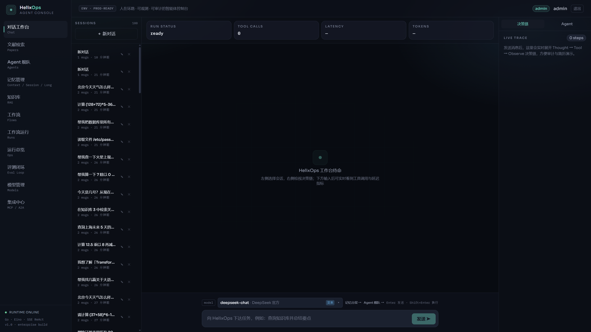
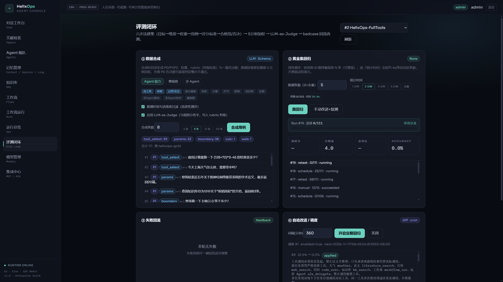
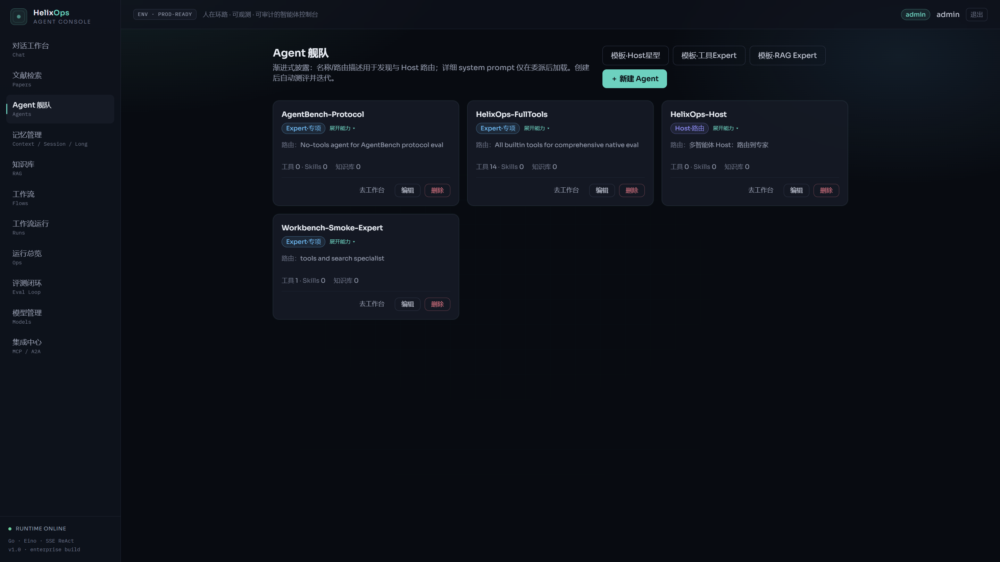

01 · Brand
登录与品牌页
演示门禁与产品定位。
自研 Go + React 平台：ReAct / Host-Expert、工具调用可审计、RAG / 记忆、 以及「合成 → 回归 → 加权打分 / 一票否决 → LLM-as-Judge → Prompt 回流」评测闭环。 本页为静态展厅，不依赖作者本机开机。
云端试用（常驻部署后）：门禁 HelixOps-Interview-2026
· demo / DemoView2026

演示门禁与产品定位。

决策链可视、工具调用、模型选择。

合成用例 → 黄金集回归 → 失败回流 → 自动改进。

Host 路由 + Expert 专项，渐进式披露。